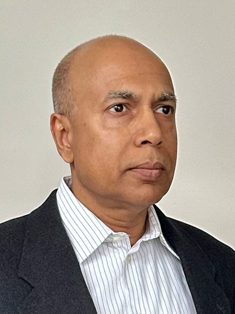

Overview
ICPS 2025 will feature distinguished keynote speakers as well as insightful tutorial sessions delivered by leading experts in power systems, smart grids, renewable integration, cyber-physical systems, and related areas.
Titles of keynote talks are being finalized and will be updated very soon. Tutorial information including speaker details and abstracts is provided below.

Shri. Samir Saxena
Chairman & Managing Director, Grid Controller of India
Title to be announced
Shri. Vamsi Rama Mohan Burra
Director (Projects), PowerGrid
Title to be announced
Shri. Aneesh Sekhar (IAS)
MD, Tamil Nadu Green Energy Corporation
To be announced

Prof. Joydeep Mitra
MSU Foundation Professor, Michigan State University, USA
Energy Storage as a Part of the Green Portfolio
Dr. Soonee Sushil Kumar
Former and founder CEO POSOCO, now Grid-India; Retd
To be announced

Dr. Palak Parikh
Senior Engineer-Power System, Vernova Research Center, GE Vernova, Canada
Strain to Synergy : Powering the NextGen Data Centers
Shri Dillip Kumar Guru
EVP (Energy and ESG), Sify Technologies Limited., Singapore (Data Centre)
To be announced
Prof. Abhijit Abhyankar, IIT Delhi
Indian Institute of Technology, Delhi
To be announced
To be announced.
Dr. Kaliappan Perumal
Additional Director, CPRI
To be announced
To be announced.

Dr. Gurunath Gurrala, IISc Bangalore
Indian Institute of Science, Bangalore
Parallel programming for Large Power system studies
Introduction to parallel computing, Different memory models in parallel programming, Introduction to shared memory paradigm using OpenMp, Matrix-Matrix multiplication using OpenMp, Load flow studies in power system, Parallel load flow using OpenMP.
Note: Should bring your own laptop with minimum 8GB ram. Windows or linux.

Dr. Mital Kanabar
PowerProfs Inc., Markham, Ontario, Canada
Industry Experiences in Accelerating Open Innovation and Cyber Resilience for the Digital Power Grid
Digital transformation of the electric power grid is essential to accelerate open innovation with data-driven AI to support the energy transition. Yet the power grid continues to face slow innovation cycles driven by proprietary vendor ecosystems, hardware-defined grid automations, and restricted access to secure, high-quality operational data. These limitations hinder experimentation, complicate integration of advanced analytics, and reinforce long-term technology lock-in.
At the same time, cybersecurity risks are intensifying on the current digital implementations. Recent power-grid cyber attacks demonstrated how power substation components—including protection relays, HMIs, engineering workstations, and remote access channels—can be compromised through structured attack chains.
From several years of industry experience, it is proposed to build open-innovation (non-proprietary) and cyber-resilient solutions considering the use-case of IEC 61850-based digital substations. This session provides a focused examination of: (1) why adoption in digital substations remains slow; (2) where cyber vulnerabilities persist today; and (3) how real-world attack scenarios map to known adversarial techniques (explained using MITRE ATT&CK framework). The session then provides a real-world case-study on open innovation demonstration—supported by open-source frameworks (e.g., Linux Foundation Energy) for the virtualized or software-defined substation automation solutions.

Dr. Sarasij Das, IISc Bangalore
Indian Institute of Science, Bangalore
Cyber Security in Digital Substations
Increasing digitization is making substations more vulnerable to cyber attacks. In this tutorial, at first, I'll discuss the IEC 61850 based architecture of digital substations. Then, various types of cyber attacks possible in a digital substation with some real life experiences will be shared. Finally, cyber security measures suggested by IEC 62351 and IEC 62443 will be discussed.

Dr. Pamulaparthy Balakrishna
GE Vernova
AI and the Future Grid: How Power Engineers Can Lead the Next Technological Transformation
The electric power grid is undergoing an unprecedented transformation driven by the convergence of digitalization, decentralization, and decarbonization. Artificial Intelligence (AI) has emerged as a pivotal enabler of this evolution, empowering utilities, and industries to achieve higher levels of reliability, efficiency, and resilience. This talk explores how AI is reshaping the architecture, operation, and management of modern power systems—spanning applications across transmission and distribution of power grids. Beyond technology, it emphasizes the evolving role of power engineers as leaders in data-driven decision-making, system modelling/analysis, and cyber-physical integration with a detailed case study on one of the key problem statements. By blending domain expertise with AI literacy, power engineers can guide the transition toward an intelligent, explainable, and responsible solutions for utilities and industries. Ultimately, it argues that the next technological transformation in the grid sector will succeed not merely through innovation in AI algorithms or technology, but through the adaptability of the power engineers along with domain skillsets who implement them.

Dr. Ramakrishnan Maheswari
University of Southern Denmark, Denmark
Small DC-link capacitor-based power converter topologies and related issues.
Power electronics converters are essential to the green energy transition. Therefore, the penetration of power converters for various applications is increasing, and they are required to meet regulatory requirements. These requirements affect the size of the active and passive components used in the converter. The first part of the tutorial addresses the requirement for the design of the converter and how it affects the selection of the passive components. These components are the main factor that decides the size, weight, and volume of the drive. They may typically contribute to 75% of the weight and volume of the converter. For these converters, the DC-link capacitor is the major contributor among the passive components. To reduce the size of converters, a reduction in the value of DC-link capacitance is an alternative. Such alternate converters can be classified as small DC-link capacitor-based power converters. The second part of the tutorial focuses on conventional power converter topologies (two-level and three-level converters) with small DC-link capacitors and related issues such as negative impedance instability and mid-point voltage balance in the three-level converter. Furthermore, the tutorial also discusses some small DC-link capacitor-based power converter topologies that utilize current injection circuits for grid-connected applications. These converters have the advantage of high efficiency and high power density. The main target audience for the tutorial is active researchers, PhD students, and working professionals from the industry in power electronics converters for electric drives. However, the topics will be presented in a way that the fundamentals can be applied to other AC-DC power converter applications as well.